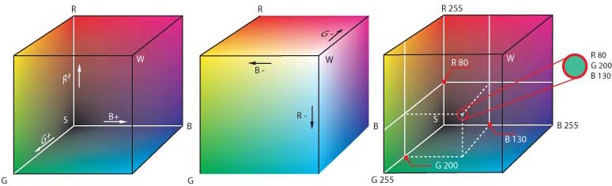

De drie lagen
Er zijn drie gestapelde ‘lagen’ in de manier waarop de hard- en software van een apparaat samenwerken. Laten we de smartphone weer als voorbeeld nemen. Daarin zijn de volgende lagen aanwezig: De fysieke laag. Deze laag bestaat uit de hardware die in een smartphone zit: van de accu tot en met het touchscreen. In hoofdstuk 4 lees je meer over hardware. De logische laag bestaat uit software die de hardware aanstuurt. Deze software maakt het mogelijk om toepassingen (zoals apps) op het apparaat uit te voeren. Bij een smartphone bestaat de logische laag voornamelijk uit het besturingssysteem, bijvoorbeeld Android of iOS. We noemen dat een besturingssysteem omdat het de hardware bestuurt. Ook bepaalt het bijvoorbeeld wat apps mogen doen. In hoofdstuk 5 lees je meer over besturingssystemen. De toepassingenlaag bestaat uit allerlei software: de toepassingen of applicaties. Op een smartphone zijn dat de apps die kunnen worden geïnstalleerd vanuit de Play- of Appstore
Bij meerkleurendruk betekent key plate de drukplaat met de artistieke details, dat wil zeggen de lijnen en effecten. Deze details worden normaal gesproken in de donkerste kleur gedrukt, dus bij CMYK in zwart.